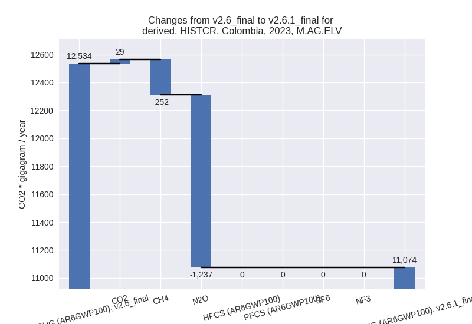

Changes in PRIMAP-hist v2.6.1_final compared to v2.6_final for Colombia
2025-03-19
Johannes Gütschow
Change analysis for Colombia for PRIMAP-hist v2.6.1_final compared to v2.6_final
Overview over emissions by sector and gas
The following figures show the aggregate national total emissions excluding LULUCF AR6GWP100 for the country reported priority scenario. The dotted linesshow the v2.6_final data.
The following figures show the aggregate national total emissions excluding LULUCF AR6GWP100 for the third party priority scenario. The dotted linesshow the v2.6_final data.
Overview over changes
In the country reported priority scenario we have the following changes for aggregate Kyoto GHG and national total emissions excluding LULUCF (M.0.EL):
- Emissions in 2023 have changed by -7.7%% (-16482.22 Gg CO2 / year)
- Emissions in 1990-2023 have changed by -2.4%% (-3453.64 Gg CO2 / year)
In the third party priority scenario we have the following changes for aggregate Kyoto GHG and national total emissions excluding LULUCF (M.0.EL):
- Emissions in 2023 have changed by -2.8%% (-6678.93 Gg CO2 / year)
- Emissions in 1990-2023 have changed by -3.2%% (-5725.66 Gg CO2 / year)
Most important changes per scenario and time frame
In the country reported priority scenario the following sector-gas combinations have the highest absolute impact on national total KyotoGHG (AR6GWP100) emissions in 2023 (top 5):
- 1: 1.A, CO2 with -10854.12 Gg CO2 / year (-10.6%)
- 2: 3.A, CH4 with -4798.92 Gg CO2 / year (-9.3%)
- 3: M.AG.ELV, N2O with -1236.61 Gg CO2 / year (-10.8%)
- 4: 4, CH4 with 1207.34 Gg CO2 / year (5.8%)
- 5: 5, N2O with -841.10 Gg CO2 / year (-100.0%)
In the country reported priority scenario the following sector-gas combinations have the highest absolute impact on national total KyotoGHG (AR6GWP100) emissions in 1990-2023 (top 5):
- 1: 1.A, CO2 with -1459.04 Gg CO2 / year (-2.3%)
- 2: 5, N2O with -738.83 Gg CO2 / year (-100.0%)
- 3: 4, CH4 with 668.98 Gg CO2 / year (5.0%)
- 4: 2, CO2 with -504.59 Gg CO2 / year (-8.5%)
- 5: M.AG.ELV, N2O with -449.91 Gg CO2 / year (-5.0%)
In the third party priority scenario the following sector-gas combinations have the highest absolute impact on national total KyotoGHG (AR6GWP100) emissions in 2023 (top 5):
- 1: 4, CH4 with -5490.57 Gg CO2 / year (-20.6%)
- 2: 3.A, CH4 with -1379.38 Gg CO2 / year (-2.6%)
- 3: 1.B.1, CH4 with 1189.79 Gg CO2 / year (46.3%)
- 4: 2, CO2 with -1032.09 Gg CO2 / year (-15.0%)
- 5: 1.B.2, CH4 with -984.52 Gg CO2 / year (-11.9%)
In the third party priority scenario the following sector-gas combinations have the highest absolute impact on national total KyotoGHG (AR6GWP100) emissions in 1990-2023 (top 5):
- 1: 4, CH4 with -4813.90 Gg CO2 / year (-23.9%)
- 2: 1.B.2, CH4 with -743.35 Gg CO2 / year (-9.9%)
- 3: 2, CO2 with -332.47 Gg CO2 / year (-6.7%)
- 4: M.AG.ELV, CH4 with 110.38 Gg CO2 / year (3.1%)
- 5: 1.B.1, CH4 with 51.08 Gg CO2 / year (1.1%)
Notes on data changes
Here we list notes explaining important emissions changes for the country.
- CRT data from BTR1 covering 1990-2021 has been included. It replaces
and extends BUR3 data.
- Overall emissions are lower, especially in 2023.
- The main factor for lower emissions in energy CO2 which is 11% lower in 2023 and 2% lower in cumulative emissions.
- Other N2O is now zero in the CR time-series as it is included as zero in the CRT data.
- Livestock CH4 is lower in the last years as the growth rates for recent years are lower in the CRT data than in FAO data.
- Waste CH4 is consistently higher in the CR scenario due to the higher data in CRT
- In the TP scenario the main change is that waste emissions are much lower and for recent years in line with the CRT data. Additional changes come from changes in agricultural and fugitive emissions in FAO and EDGAR data.
Changes by sector and gas
For each scenario and time frame the changes are displayed for all individual sectors and all individual gases. In the sector plot we use aggregate Kyoto GHGs in AR6GWP100. In the gas plot we usenational total emissions without LULUCF.
country reported scenario
2023
1990-2023
third party scenario
2023
1990-2023
Detailed changes for the scenarios:
country reported scenario (HISTCR):
Most important changes per time frame
For 2023 the following sector-gas combinations have the highest absolute impact on national total KyotoGHG (AR6GWP100) emissions in 2023 (top 5):
- 1: 1.A, CO2 with -10854.12 Gg CO2 / year (-10.6%)
- 2: 3.A, CH4 with -4798.92 Gg CO2 / year (-9.3%)
- 3: M.AG.ELV, N2O with -1236.61 Gg CO2 / year (-10.8%)
- 4: 4, CH4 with 1207.34 Gg CO2 / year (5.8%)
- 5: 5, N2O with -841.10 Gg CO2 / year (-100.0%)
For 1990-2023 the following sector-gas combinations have the highest absolute impact on national total KyotoGHG (AR6GWP100) emissions in 1990-2023 (top 5):
- 1: 1.A, CO2 with -1459.04 Gg CO2 / year (-2.3%)
- 2: 5, N2O with -738.83 Gg CO2 / year (-100.0%)
- 3: 4, CH4 with 668.98 Gg CO2 / year (5.0%)
- 4: 2, CO2 with -504.59 Gg CO2 / year (-8.5%)
- 5: M.AG.ELV, N2O with -449.91 Gg CO2 / year (-5.0%)
Changes in the main sectors for aggregate KyotoGHG (AR6GWP100) are
- 1: Total sectoral emissions in 2022 are 96249.99 Gg
CO2 / year which is 50.5% of M.0.EL emissions. 2023 Emissions have
changed by -8.8% (-9896.39 Gg CO2 /
year). 1990-2023 Emissions have changed by -2.3% (-1743.41 Gg CO2 / year). For 2023
the changes per gas
are:
For 1990-2023 the changes per gas are:
The changes come from the following subsectors:- 1.A: Total sectoral emissions in 2022 are 89573.33
Gg CO2 / year which is 93.1% of category 1 emissions. 2023 Emissions
have changed by -10.4% (-11133.23 Gg
CO2 / year). 1990-2023 Emissions have changed by -2.2% (-1502.43 Gg CO2 / year). For 2023
the changes per gas
are:
For 1990-2023 the changes per gas are:
There is no subsector information available in PRIMAP-hist. - 1.B.1: Total sectoral emissions in 2022 are 2274.38
Gg CO2 / year which is 2.4% of category 1 emissions. 2023 Emissions have
changed by 34.4% (554.63 Gg CO2 /
year). 1990-2023 Emissions have changed by 1.0% (23.68 Gg CO2 / year). For 2023 the
changes per gas
are:
There is no subsector information available in PRIMAP-hist. - 1.B.2: Total sectoral emissions in 2022 are 4402.27
Gg CO2 / year which is 4.6% of category 1 emissions. 2023 Emissions have
changed by 15.9% (682.21 Gg CO2 /
year). 1990-2023 Emissions have changed by -6.0% (-264.66 Gg CO2 / year). For 2023
the changes per gas
are:
For 1990-2023 the changes per gas are:
There is no subsector information available in PRIMAP-hist.
- 1.A: Total sectoral emissions in 2022 are 89573.33
Gg CO2 / year which is 93.1% of category 1 emissions. 2023 Emissions
have changed by -10.4% (-11133.23 Gg
CO2 / year). 1990-2023 Emissions have changed by -2.2% (-1502.43 Gg CO2 / year). For 2023
the changes per gas
are:
- 2: Total sectoral emissions in 2022 are 13307.50 Gg
CO2 / year which is 7.0% of M.0.EL emissions. 2023 Emissions have
changed by -4.4% (-636.13 Gg CO2 /
year). 1990-2023 Emissions have changed by -7.3% (-590.52 Gg CO2 / year). For 2023
the changes per gas
are:
For 1990-2023 the changes per gas are: - M.AG: Total sectoral emissions in 2022 are 58513.91
Gg CO2 / year which is 30.7% of M.0.EL emissions. 2023 Emissions have
changed by -9.7% (-6327.59 Gg CO2 /
year). 1990-2023 Emissions have changed by -2.2% (-1055.42 Gg CO2 / year). For 2023
the changes per gas
are:
For 1990-2023 the changes per gas are:
The changes come from the following subsectors:- 3.A: Total sectoral emissions in 2022 are 47515.95
Gg CO2 / year which is 81.2% of category M.AG emissions. 2023 Emissions
have changed by -9.3% (-4867.40 Gg
CO2 / year). 1990-2023 Emissions have changed by -0.9% (-327.41 Gg CO2 / year). For 2023
the changes per gas
are:
There is no subsector information available in PRIMAP-hist. - M.AG.ELV: Total sectoral emissions in 2022 are
10997.96 Gg CO2 / year which is 18.8% of category M.AG emissions. 2023
Emissions have changed by -11.6%
(-1460.19 Gg CO2 / year). 1990-2023 Emissions have changed by -7.3% (-728.01 Gg CO2 / year). For 2023
the changes per gas
are:

For 1990-2023 the changes per gas are:
There is no subsector information available in PRIMAP-hist.
- 3.A: Total sectoral emissions in 2022 are 47515.95
Gg CO2 / year which is 81.2% of category M.AG emissions. 2023 Emissions
have changed by -9.3% (-4867.40 Gg
CO2 / year). 1990-2023 Emissions have changed by -0.9% (-327.41 Gg CO2 / year). For 2023
the changes per gas
are:
- 4: Total sectoral emissions in 2022 are 22538.55 Gg
CO2 / year which is 11.8% of M.0.EL emissions. 2023 Emissions have
changed by 5.6% (1218.98 Gg CO2 /
year). 1990-2023 Emissions have changed by 4.8% (674.54 Gg CO2 / year). For 2023 the
changes per gas
are:
For 1990-2023 the changes per gas are: - 5: Total sectoral emissions in 2022 are 0.00 Gg CO2
/ year which is 0.0% of M.0.EL emissions. 2023 Emissions have changed by
-100.0% (-841.10 Gg CO2 / year).
1990-2023 Emissions have changed by -100.0% (-738.83 Gg CO2 / year). For 2023
the changes per gas
are:
For 1990-2023 the changes per gas are:
third party scenario (HISTTP):
Most important changes per time frame
For 2023 the following sector-gas combinations have the highest absolute impact on national total KyotoGHG (AR6GWP100) emissions in 2023 (top 5):
- 1: 4, CH4 with -5490.57 Gg CO2 / year (-20.6%)
- 2: 3.A, CH4 with -1379.38 Gg CO2 / year (-2.6%)
- 3: 1.B.1, CH4 with 1189.79 Gg CO2 / year (46.3%)
- 4: 2, CO2 with -1032.09 Gg CO2 / year (-15.0%)
- 5: 1.B.2, CH4 with -984.52 Gg CO2 / year (-11.9%)
For 1990-2023 the following sector-gas combinations have the highest absolute impact on national total KyotoGHG (AR6GWP100) emissions in 1990-2023 (top 5):
- 1: 4, CH4 with -4813.90 Gg CO2 / year (-23.9%)
- 2: 1.B.2, CH4 with -743.35 Gg CO2 / year (-9.9%)
- 3: 2, CO2 with -332.47 Gg CO2 / year (-6.7%)
- 4: M.AG.ELV, CH4 with 110.38 Gg CO2 / year (3.1%)
- 5: 1.B.1, CH4 with 51.08 Gg CO2 / year (1.1%)
Changes in the main sectors for aggregate KyotoGHG (AR6GWP100) are
- 1: Total sectoral emissions in 2022 are 112036.84 Gg CO2 / year which is 49.5% of M.0.EL emissions. 2023 Emissions have changed by 0.4% (502.27 Gg CO2 / year). 1990-2023 Emissions have changed by -0.8% (-672.32 Gg CO2 / year).
- 2: Total sectoral emissions in 2022 are 15491.94 Gg
CO2 / year which is 6.8% of M.0.EL emissions. 2023 Emissions have
changed by -6.4% (-1103.15 Gg CO2 /
year). 1990-2023 Emissions have changed by -4.0% (-337.51 Gg CO2 / year). For 2023
the changes per gas
are:
For 1990-2023 the changes per gas are: - M.AG: Total sectoral emissions in 2022 are 75518.66 Gg CO2 / year which is 33.4% of M.0.EL emissions. 2023 Emissions have changed by -0.8% (-601.35 Gg CO2 / year). 1990-2023 Emissions have changed by 0.2% (109.48 Gg CO2 / year).
- 4: Total sectoral emissions in 2022 are 22380.94 Gg
CO2 / year which is 9.9% of M.0.EL emissions. 2023 Emissions have
changed by -19.2% (-5451.28 Gg CO2 /
year). 1990-2023 Emissions have changed by -22.5% (-4810.85 Gg CO2 / year). For 2023
the changes per gas
are:
For 1990-2023 the changes per gas are: - 5: Total sectoral emissions in 2022 are 824.90 Gg
CO2 / year which is 0.4% of M.0.EL emissions. 2023 Emissions have
changed by -3.0% (-25.42 Gg CO2 /
year). 1990-2023 Emissions have changed by -2.0% (-14.46 Gg CO2 / year). For 2023 the
changes per gas
are: